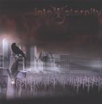

| Artist: | Into Eternity |
| Title: | Dead Or Dreaming |
| Label: | DVS Records DVS004 |
| Length(s): | 44 minutes |
| Year(s) of release: | 2001 |
| Month of review: | [02/2002] |
| 1) | Absolution Of The Soul | 3.58 |
| 2) | Distant Pale Future | 5.07 |
| 3) | Shallow | 6.14 |
| 4) | Unholy (fields Of The Dead) | 4.53 |
| 5) | Elysium Dream | 4.38 |
| 6) | Selling God | 3.07 |
| 7) | Imagination Overdose | 3.46 |
| 8) | Dead Or Dreaming | 4.17 |
| 9) | Cyber Messiah | 4.29 |
| 10) | Identity | 3.45 |
Although the opener was not bad, the follow-up opens better. Like on the previous track the song contains both catchy and black metal vocals (which I like definitely less and are often used in semi-rap style), but the melodic vocals are much more attractive here. In addition, the guitar is also used effectively as a melodic instrument to support the melodic vocals. The track is a hasty one in which baroque sounding elements are present.
Opening with acoustic guitar and continuing pacily with piano tunes, Shallow generally follows the same lines as the previous track. It seems that notwithstanding within a track, the band tends to work according a format for each of the tracks. It has to be said however that the melodic vocal parts are again great, including the vocal harmonies. The death vocals lend the song its aggression and fit well with the off-and-on rhythm guitars After an electric guitar solo, the music quietens down a bit with a folky sounding acoustic guitar. However the angry young men fire away soon after. The best track so far, mainly because of the vocal harmonies.
Unholy, subtitled Fields Of The Dead, is a bit more catchy and rather straightforward, with the mandatory guitar solo's, but also a bit of the epic in there. The song is up-tempo and tends to include a few classical influences as well (as often found in metal). The vocalist has a bit of the voice of Steve Walsh on this track. I also find that the band has a very American sound, mostly because of the vocals I think. The repetitive vocal chorus part returns at the end.
One might think first of Gentle Giant as the next song starts. Elysium Dream does not continue in this fashion. In fact during the vocal parts, I am thinking more of current metal. Of course, the vocal variation is larger than generally, but the melodic part leaves something to be desired and then the music loses much of its appeal.
Selling God is rather short track on which the angelic vocals of Amy Ozog play a role. In Imagination Overdose we have a question answer game between two of the vocalist with the death vocals coming up once in a while. The rhythm guitar is reallt good on this one, but the vocal melody is less interesting. The strong drive of the drummer is felt very much, but this is the case on every track. Om this track, the classical influences (and lots of notes) is strongly apparent.
The title track fires you up, follow up Cyber Messiah is less succesful. It seems that the strength of each of the songs depends, for me, largely on the quality of the melodic vocal parts. For the remainder the songs are rather "the same".
Closer Identify ends up above average what concerns the melodies, also apparent in the strong guitar solo.